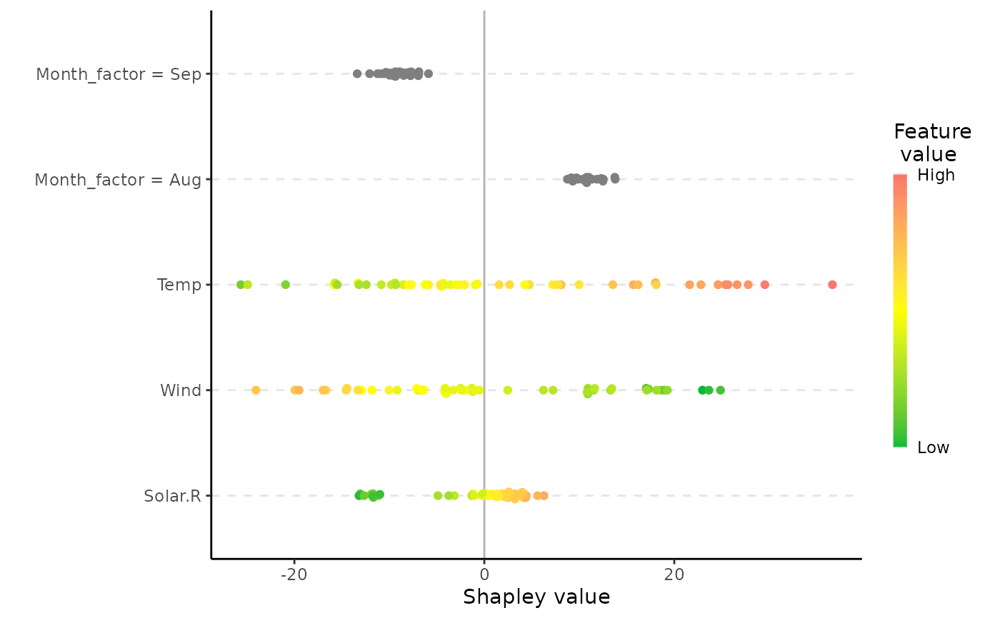

Plots the individual prediction explanations.
# S3 method for shapr plot( x, digits = 3, plot_phi0 = TRUE, index_x_test = NULL, top_k_features = NULL, ... )
| x | An |
|---|---|
| digits | Integer. Number of significant digits to use in the feature description |
| plot_phi0 | Logical. Whether to include |
| index_x_test | Integer vector. Which of the test observations to plot. E.g. if you have
explained 10 observations using |
| top_k_features | Integer. How many features to include in the plot. E.g. if you have 15
features in your model you can plot the 5 most important features, for each explanation, by setting
|
| ... | Currently not used. |
ggplot object with plots of the Shapley value explanations
See vignette("understanding_shapr", package = "shapr") for an example of
how you should use the function.
Martin Jullum
if (requireNamespace("MASS", quietly = TRUE)) { #' # Load example data data("Boston", package = "MASS") # Split data into test- and training data x_train <- head(Boston, -3) x_test <- tail(Boston, 3) # Fit a linear model model <- lm(medv ~ lstat + rm + dis + indus, data = x_train) # Create an explainer object explainer <- shapr(x_train, model) # Explain predictions p <- mean(x_train$medv) # Empirical approach explanation <- explain(x_test, explainer, approach = "empirical", prediction_zero = p, n_samples = 1e2 ) if (requireNamespace("ggplot2", quietly = TRUE)) { # Plot the explantion (this function) plot(explanation) } }#>#>